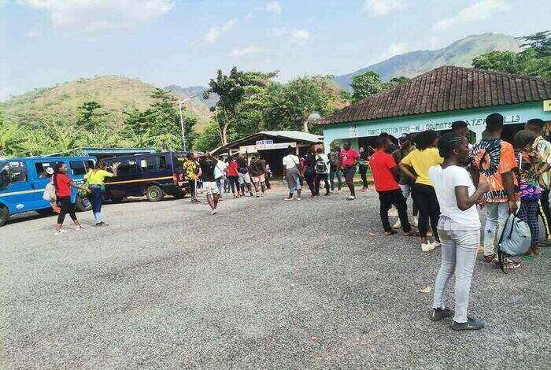

THE YSA THIRST FOR ADVENTURE

As part of the gospel and not making things so boring for the younger groups, occasionally; trips are organized in the form of excursions for the YSA to travel and have fun by visiting tourist sites and sceneries. This puts the YSA in the spirit of unity as the saying goes; “Friends that travel together, stay together. All that you need to make merry is a great friend, and thirst for Adventure!
The leadership of the Kpong Ghana District YSA on March 8, 2021 organized an excursion to the highest mountain in West Africa(mountain Afadjato), a total of eight (8) branches had their young single adults participate in this trip. In all, a total of 75 participants from these individual branches made it for this trip. With all participants arriving at about 5am, the journey commenced officially at 5.30am with an opening prayer offered. A group of YSAs entertained the bus with some great morale (jama) tunes which kept the adventure spirited up. Milo beverage was served as breakfast along the journey. The company made it to Ho at about 7am where they were joined by the Ho district YSA to continue the trip.
Truth be told, it was a great experience that was daring right from the curvy and mountainous road that the company had to use. It made many of us to realize how mountainous that part of the country is- far mountainous than the Akwapim range, I must say. The company made it to Afadjato, our first site at about 11am. Upon our arrival, we were welcomed by a team of tourist guides who provided us with a brief history and background to the place- Afadjato. Afa- apparently is a derivative of the ewe word for war (Ava); dja- refers to the plant poison ivy (itching plant); and to- means mountain